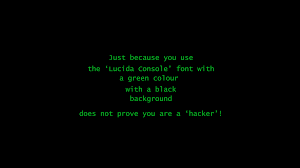

My status in College
Activities
1. Basket playing
2. Complete analysis of exams
3. Functional requirements
4. Elaborative implementation of natural activities.
5. Collaborative team work from staff
5. Performance Acrhitecture in the manipulation.
There are so many functional requirements that are
independent to the variables that are functional to data itself.
This functionalities are independent to how people variably take precautions to their events.
Our discovery

The essence of the background image is a constitue of actual
functionality that is independent to the categorised static
performance of the citing.
The probability of data is an essence
of practical nature of the data itself, there are major instances
where data itself is part of the actual functionality.

The functionality is immediate to how data itself is formalized.